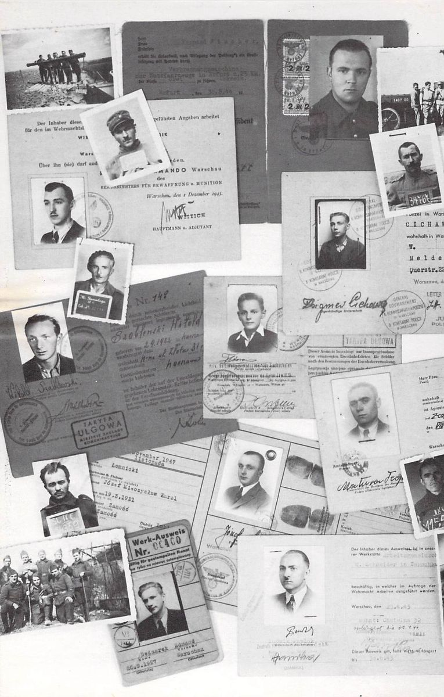

A Note on Photos, Mementos and Artifacts
Group photos of prisoners and photos of military funerals were arranged by the Germans as a means of propaganda to show relatives how well prisoners were treated. Copies of photos were made available to prisoners and were paid for with POW ‘scrip’. Often, new British uniforms would be issued for ‘photo use only’ and then ‘retrieved’. Photos, which were mainly of groups captured at Dunkirk, were later discontinued (military funerals excepted) as prisoners became aware of their propaganda value to the Germans.
Some POW photos and ID cards (Ausweis) were acquired after release and were returned to known prisoners who could be located. Others are of European, Polish, Serbian and Russian, etc. POWs. (If any POW recognizes his photo or ID card, he can obtain it by writing to the publisher.)
Some sketches and cartoons are by the author, others were copied from the drawings of various prisoners.
Escape maps were supplied by ‘intelligence’ through an organization that I prefer not to identify.
